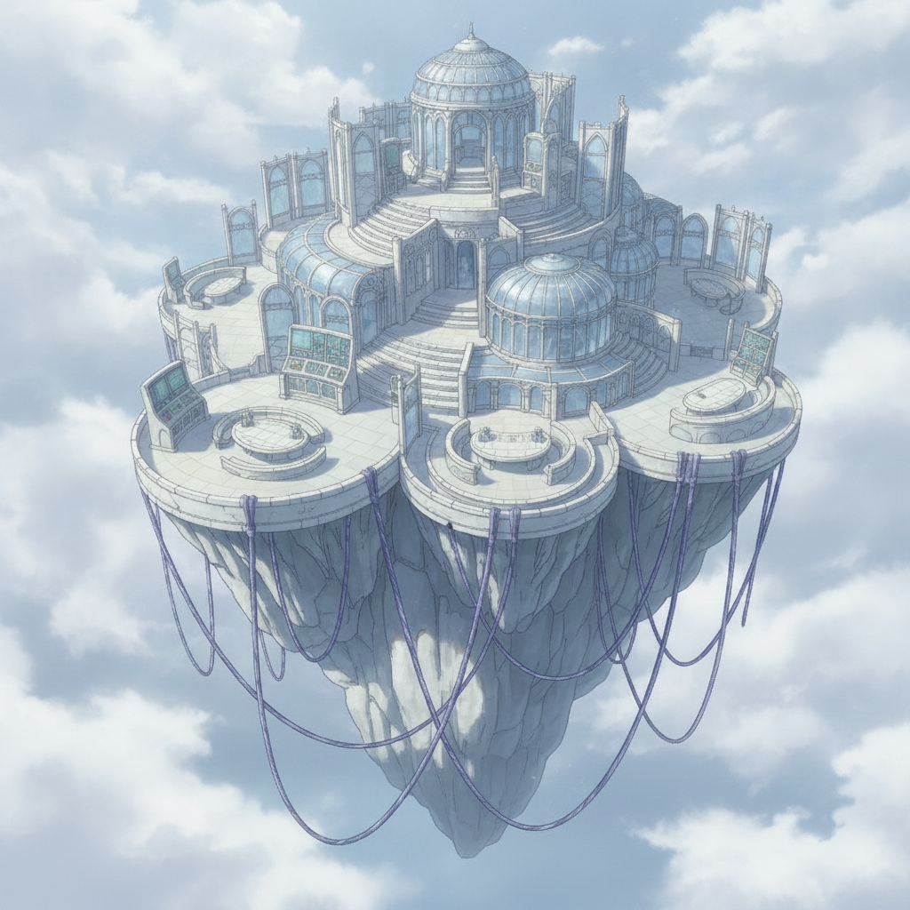

Halcyon Reach, the family seat, is a place of pale terraces and glass conservatories where wars are settled with words. Seraphine returns here not to mediate, but to act.
Her blood and bearing open doors closed to everyone else, turning scandal into leverage, and leverage into a burgeoning coalition.
While she moves through court chambers, exposing corruption with surgical precision, I work to gather intelligence, feeding her the evidence she needs.
We receive communications from other stranded pairs. Some have assassinated their landing-nations' monarchs. Others build comms back to us. Seraphine braids them into one formidable front.